„Malen Frauen anders?“ · 2025

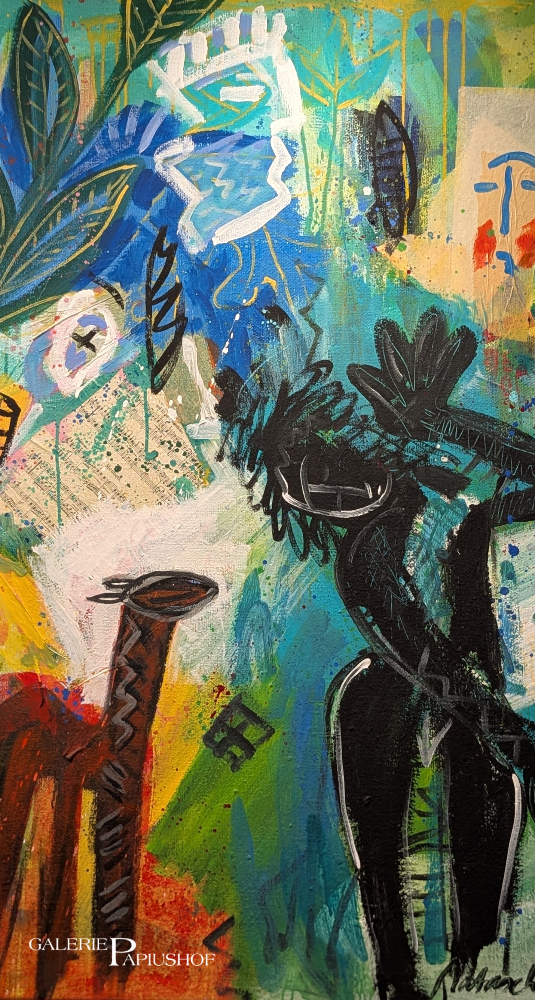

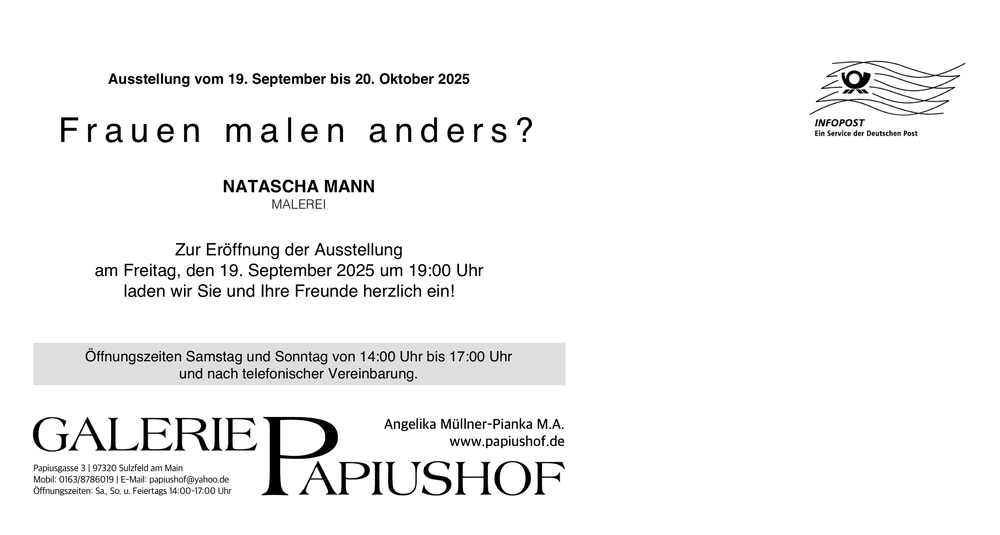
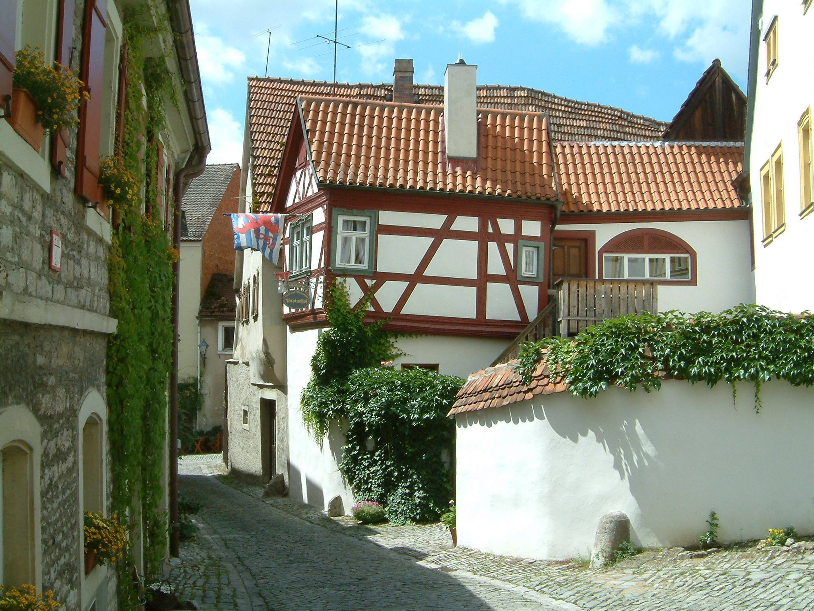
Ein Haus mit Geschichte
Willkommen im Papiushof – einem besonderen Ort im Herzen von Sulzfeld am Main.
Den Papiushof entdeckenWillkommen im Papiushof
Im Papiushof begegnen sich fränkische Geschichte, Kunst und Gastlichkeit. Entdecken Sie unsere Galerie, genießen Sie eine Weinprobe oder verbringen Sie entspannte Tage in unserer kleinen Kemenate.
01 Kunst im Papiushof
Die Galerie ist während der Ausstellungen geöffnet – und nach Vereinbarung.
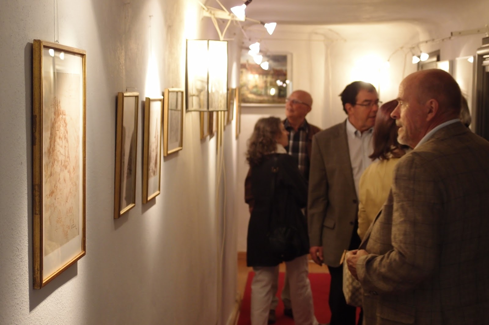
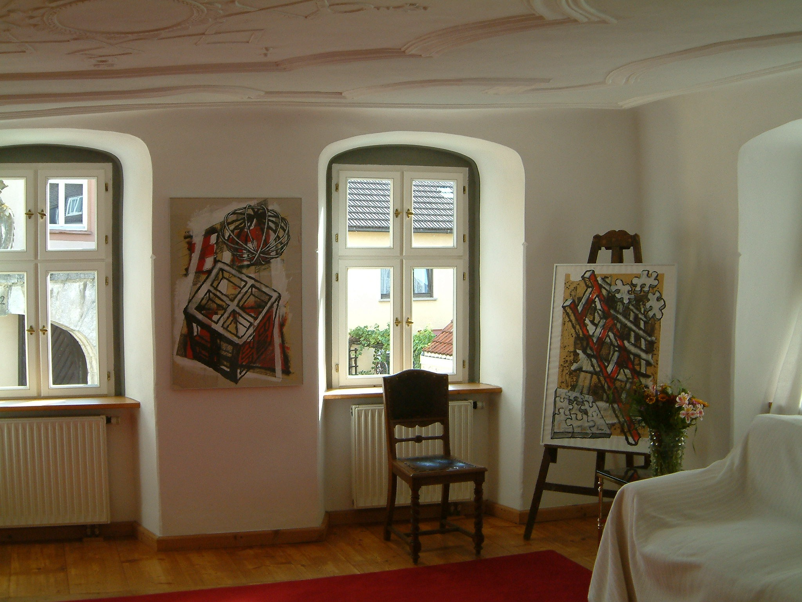
Natascha Mann · Malerei
Die Ausstellung fand vom 19. September bis 20. Oktober 2025 statt. Dieser Eintrag ist ein Rückblick.


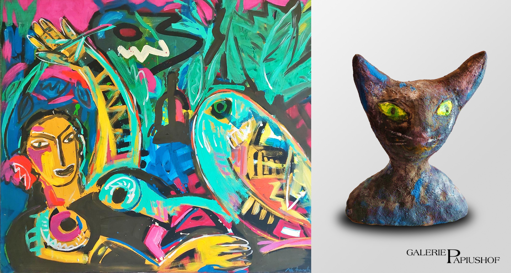
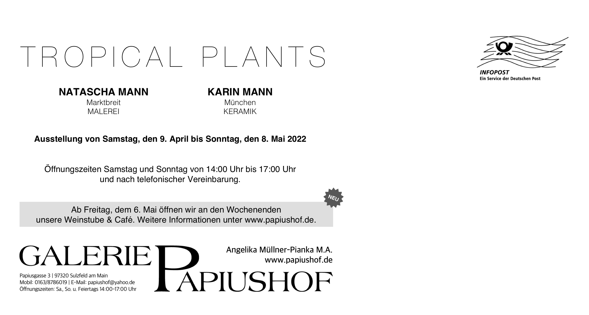
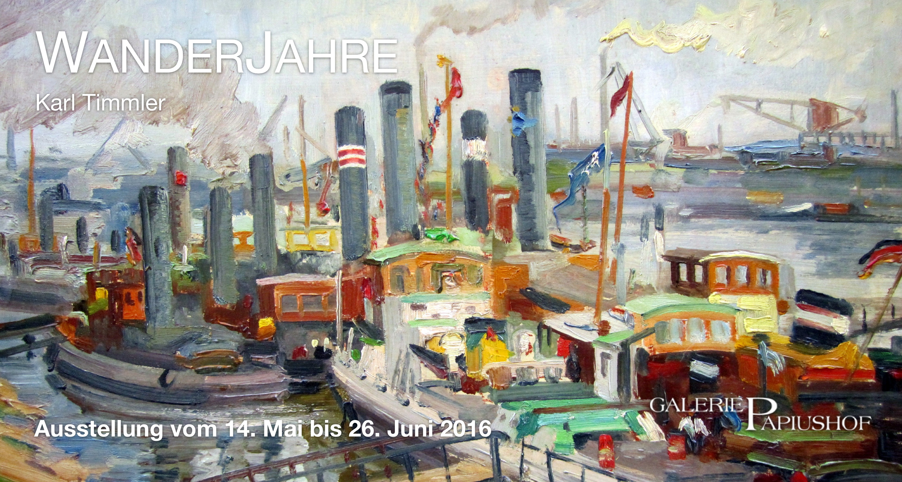
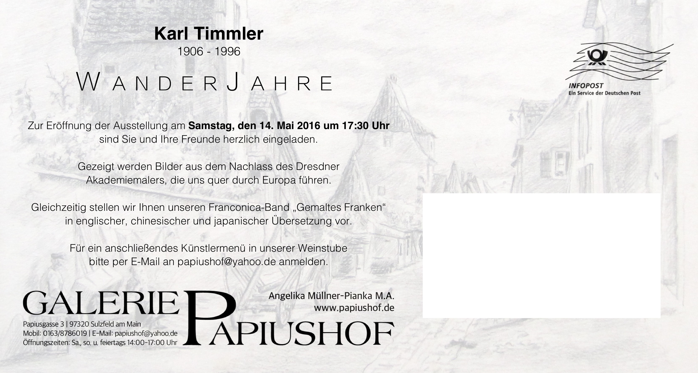


Während der Ausstellungen: Samstag, Sonntag und Feiertag von 14 bis 17 Uhr. Außerhalb dieser Zeiten gerne nach telefonischer Vereinbarung.
09321 9088282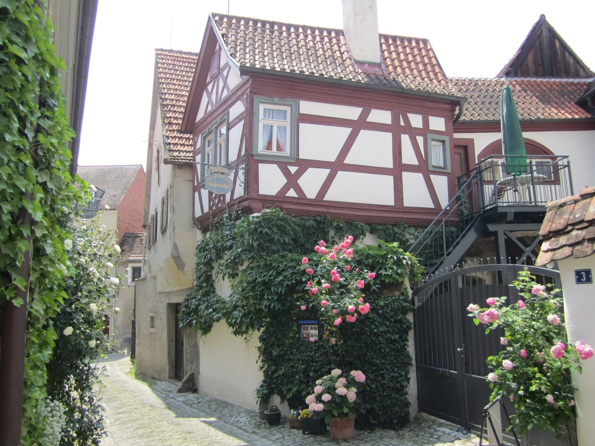
02 Übernachten im Papiushof
Ein kleines Refugium im spätgotischen Anbau.
Auf rund 30 m² erwarten Sie Dusche, kleine Küche, Balkon und Schlafzimmer – ein ruhiger Ort zum Erholen, Dichten und Philosophieren. Der Main liegt direkt vor der Tür; Fahrräder können ausgeliehen werden.
89 €pro Nacht für zwei Personen · ab 3 Nächten
95 €pro Nacht für zwei Personen · ab 2 Nächten
Preise inklusive Bettwäsche, Handtüchern und Endreinigung. Frühstück ist auf Anfrage möglich.
Aufenthalt anfragen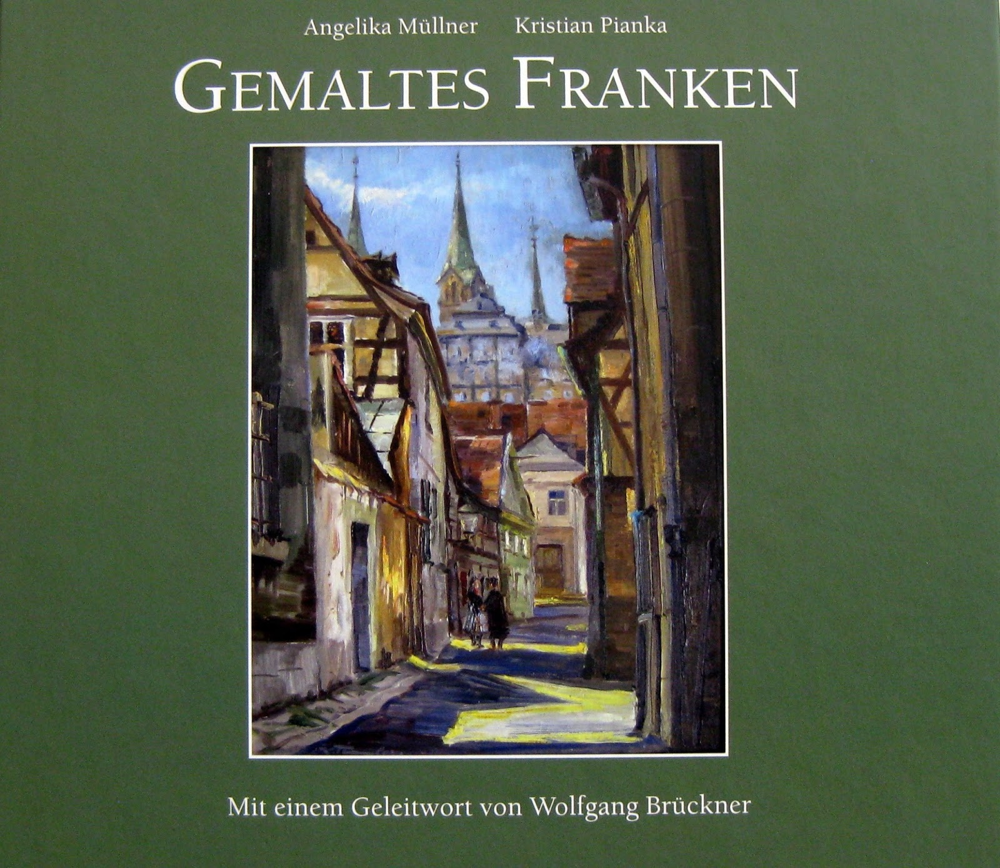
03 Ein Stück Franken für Zuhause
Fränkische Ansichten im Werk von Karl Timmler (1906–1996)
Der Bildband versammelt Ölgemälde, Aquarelle und Zeichnungen aus sechs Jahrzehnten. Zu 19 Orten erzählen die Autoren Historisches, Anekdotisches und Geographisches.
108 Seiten · 77 farbige Abbildungen · Hardcover
Deutsche Ausgabe: 18,90 € (zzgl. Porto)
Englische, chinesische und japanische Ausgabe: je 19,90 € (zzgl. Porto)
04 Fränkische Gastlichkeit
Ein guter Platz für guten Wein und regionale Küche.
In den historisch gewachsenen Gasträumen und im romantischen Innenhof lässt sich Franken besonders schön genießen. Auf der Weinkarte finden Sie Weine fränkischer Prädikatsweingüter und eine kleine, saisonale Küche.
Weinstube und Café sind derzeit pausiert.
Für kleine Feiern und Familienfeste ist eine Anmietung nach Absprache möglich.
Anfragen: 09321 9088282
Neuigkeiten zu einer Wiedereröffnung werden hier ergänzt.
05 Franken im Glas
Sechs Weine. Ein historischer Keller. Viele Geschichten.
Bei einer Weinprobe im ehemaligen Amtskeller des Domkapitels entdecken Sie ausgewählte Frankenweine und erfahren Wissenswertes über Rebsorten, Terroir und Weinausbau. Bei schönem Wetter genießen wir den Wein im Innenhof.
Weinproben sind nach Vorbestellung möglich. Für Termine und weitere Informationen freuen wir uns auf Ihre Nachricht.
Weinprobe anfragen06 In den Medien
Ausgewählte Berichte über Ausstellungen und den Papiushof.
07 Wir freuen uns auf Ihre Nachricht
Galerie und Weinstube Papiushof
Papiusgasse 3